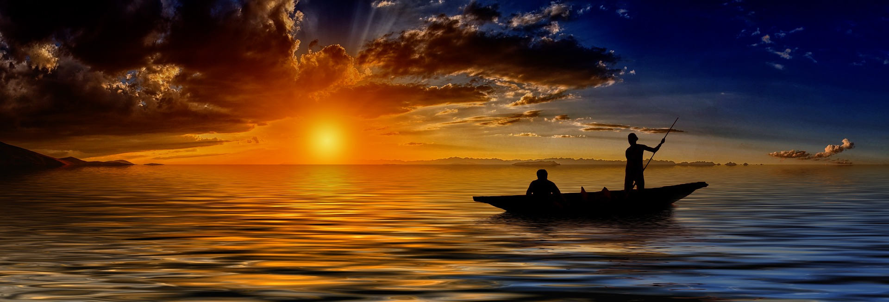
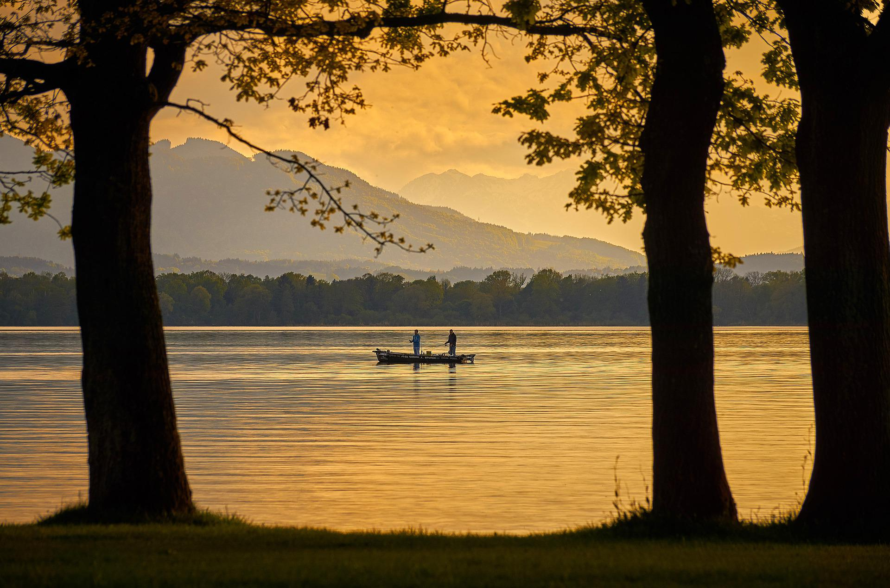
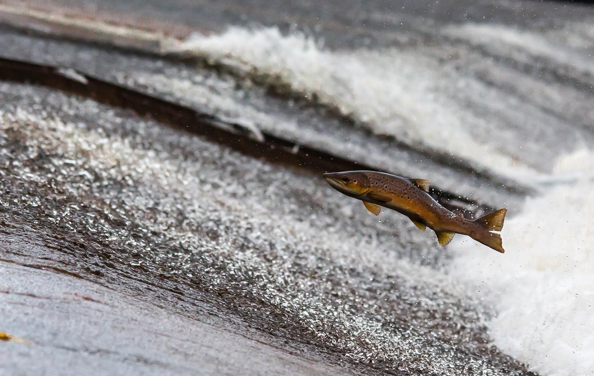
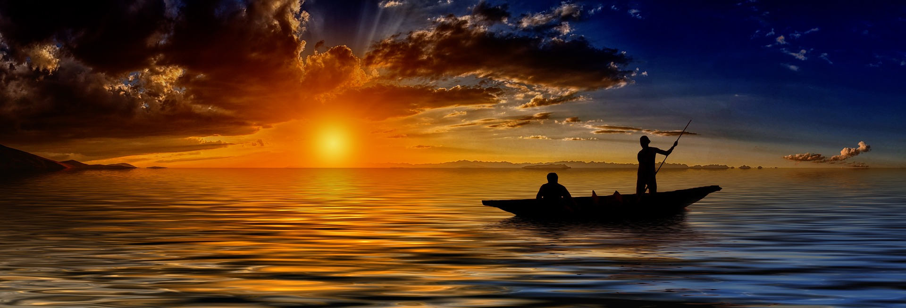
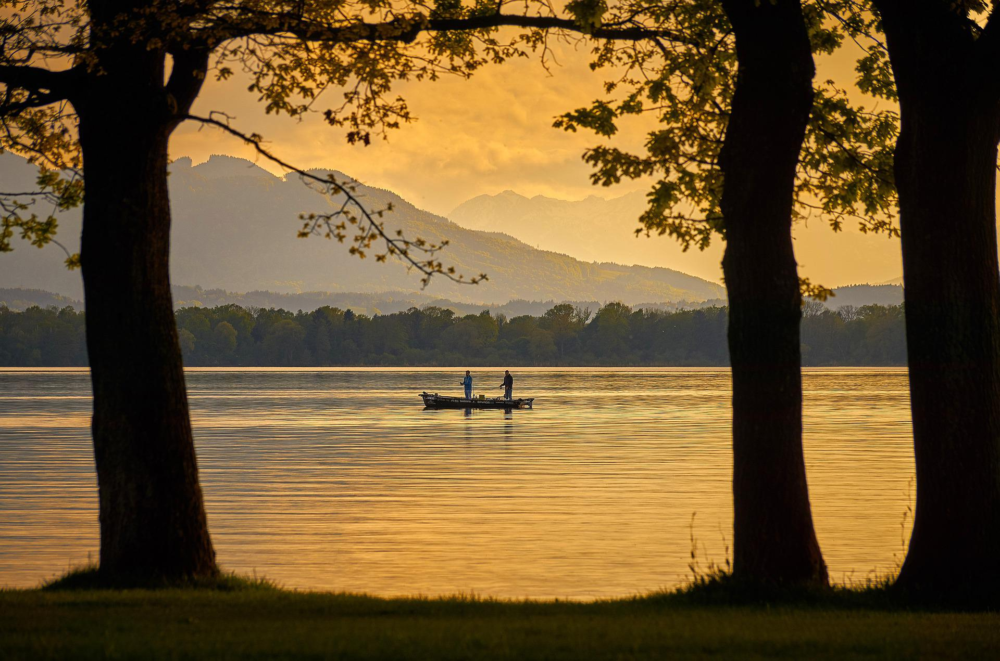
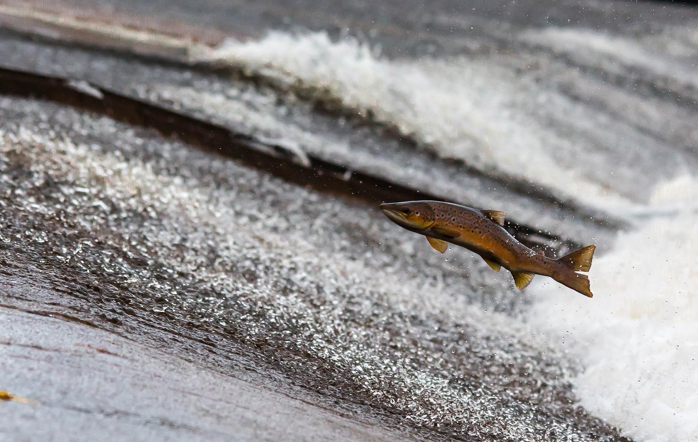

Lakes and Rivers
Not sure where to catch your next big fish? Check out our Lakes and Rivers page to find some of the top locations to fish in Wisconsin. You will be able to check out the current weather forecast in that area and be provided with helpful facts about each location.
Fish
If you are new to the sport and are not sure what to catch, then check out our Fish page to find interesting facts on some of the local fish.
This includes their scientific name or other aliases they go by, when and where will you have the best chance to catch them, and what type of bait will get the fish to bite.
Fun Facts
Looking for an adventure? Take a look at the Fun Facts page and have a random fish name given to you, that you can use as a challenge to go out and catch that type of fish.
Resources
On our Resources page, we have all the links to where we have gathered our data and images from.
Registration Information
Although you are excited to get out and fish, it is important to follow the fishing regulations and get your fishing license. The following links will direct you to the Wisconsin DNR website.
- Fishing Regulations: What, When, and Where can I fish legally?
- Fishing Licenses: Make sure to get your fishing license to avoid fines.
- Fishing Seasons: When specific fishing seasons take place for Wisconsin.